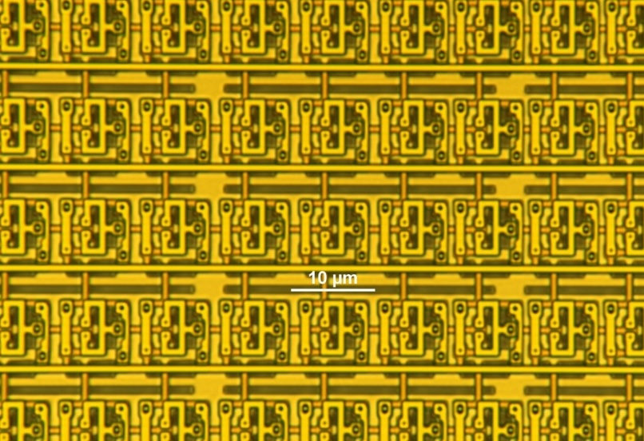

Superconducting Electronics Intern at MIT Lincoln Laboratory
Internship Overview
At Lincoln Laboratory, I worked on making digital electronics using superconductors with Adiabatic Quantum Flux Parametron (AQFP) logic. Even after taking into account cooling overhead, this technology draws 100x less power than conventional CMOS devices. Current efforts are largely dedicated towards creating higher density memory and increasing complexity of system level designs to try to compete with datacenter AI inference chips.
Research Focus and Contributions
I designed 2 RF PCBs to enable 5GHz testing of superconducting chips. Previously, the group had been unable to perform high speed testing of their chips due to inadequate test setups. My designs remedied this issue, and also provided a platform for showcasing multi-chip interfacing and commercial chip packaging. To do this I used Altium and then simulated the designs in Ansys HFSS to ensure they would work at the desired frequencies. After fabrication, I populated the boards with components and tested them using a vector network analyzer. I also created documentation for testing procedures and results, as well as guidelines for future PCB designs and orders.
Additionally, along with 2 other interns, I co-patented a novel AQFP logic design topology that replaces geometric inductors with sub-critical current josephson inductance, reducing the area of logic and memory standard cells by 40%, and improving scalability of the technology. We designed and taped out a digital logic and memory test chip of the new topology on Lincoln Lab's 350nm Niobium process using Cadence Virtuoso and superconducting parasitic extraction tools.